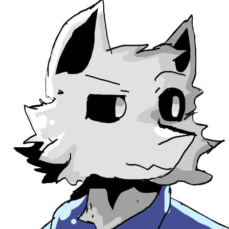

SaProductio

SaProductio
Lua scripter
The co-leader developer and major playtester of Changed: Enhanced Edition (Changed's MV port with improvements)
Profile picture by
Alfred0
Go back
Wiretable, 2022.